Dein Platz. Deine Leute. Dein Leo’s.
Wir renovieren. Bald neu in Willsbach.
Löwenwort des Tages, ab Eröffnung LöwenherzÖffnungszeiten folgen zur Eröffnung.
Instagram Facebook Google Maps Impressum Datenschutz
Raucherlokal, Zutritt ab 18 Jahren
Dein Platz. Deine Leute. Dein Leo’s.
Wir renovieren. Bald neu in Willsbach.
Löwenwort des Tages, ab Eröffnung LöwenherzÖffnungszeiten folgen zur Eröffnung.
Instagram Facebook Google Maps Impressum Datenschutz
Raucherlokal, Zutritt ab 18 Jahren
Leos Stunde ab Eröffnung, täglich 15 bis 18 Uhr: Feierabend-Preis auf Pils und Weinschorle
Ein erster Blick auf unsere Karte. Die vollständigen Preise folgen zur Eröffnung.
Dazu: Leo’s Bier Vesper 4,50
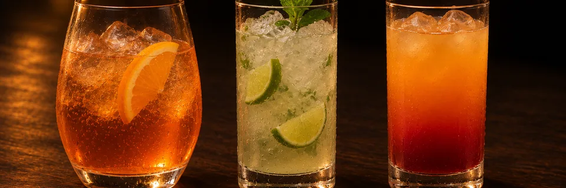
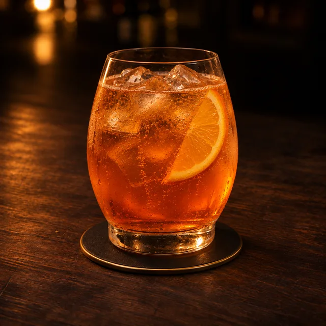
Aperol Spritz3,OAperol, Prosecco, Soda, Orange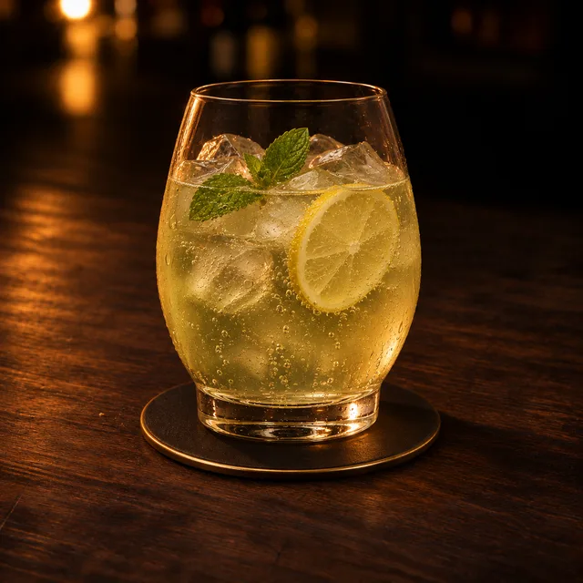
HugoOHolunderblüte, Prosecco, Minze, Limette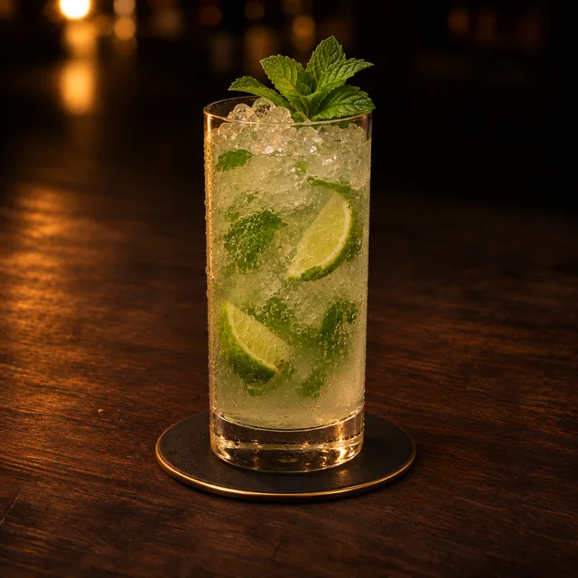
MojitoRum, Limette, Minze, Soda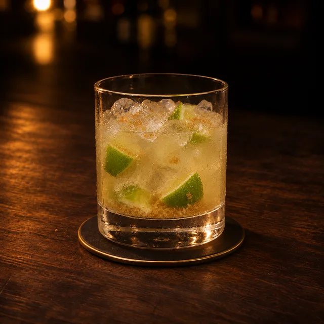
CaipirinhaCachaça, Limette, Rohrzucker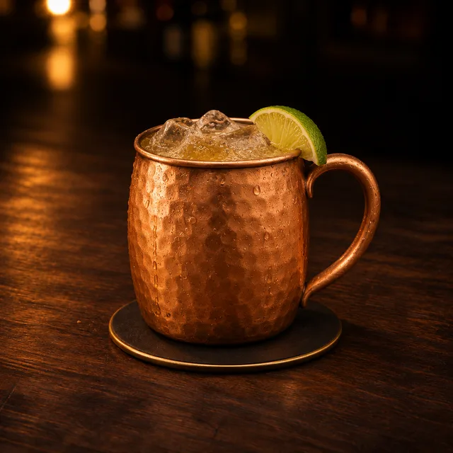
Moscow Mule3Wodka, Limette, Ginger Beer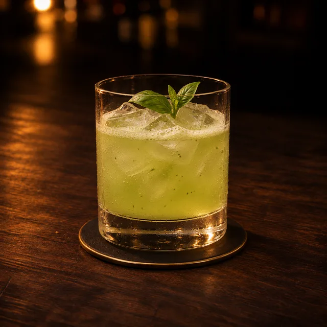
Gin Basil SmashGin, Basilikum, Zitrone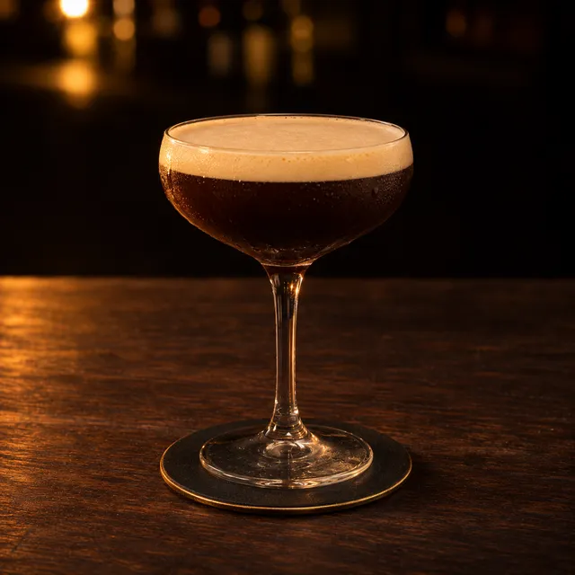
Leo’s Mokka Martini1Wodka, Kaffeelikör, Mokka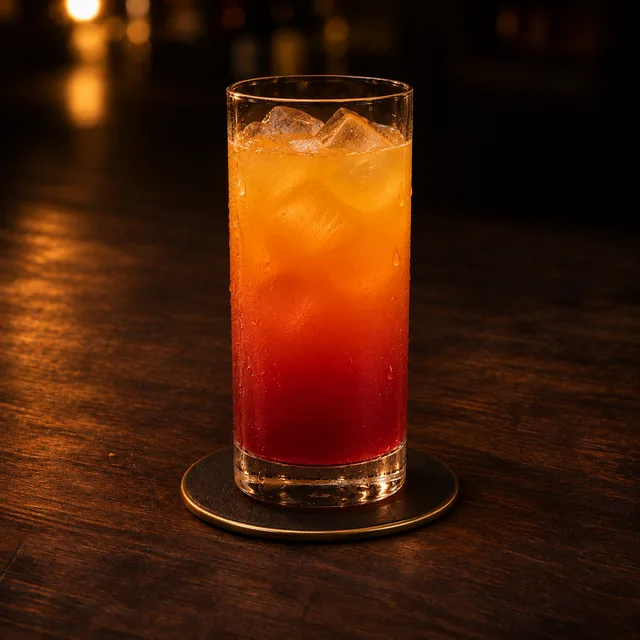
Sex on the BeachWodka, Pfirsich, Orange, Cranberry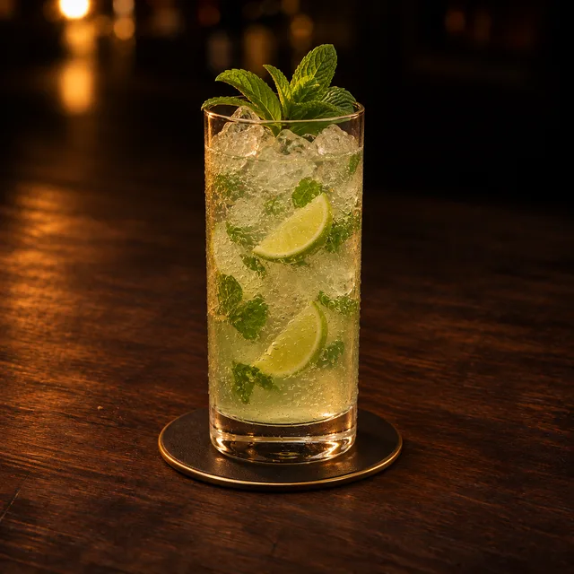
Virgin Mojitoalkoholfrei: Limette, Minze, Soda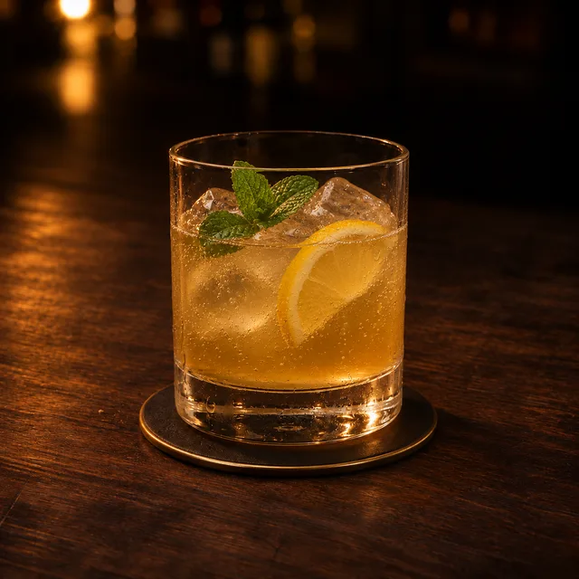
Lion’s Ginger3Leo ohne Alkohol: Ginger Beer, Honig, Zitrone, Minze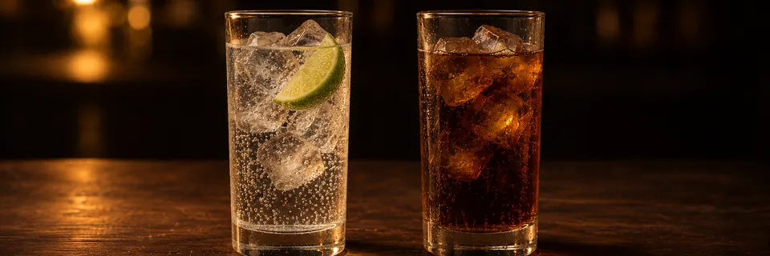
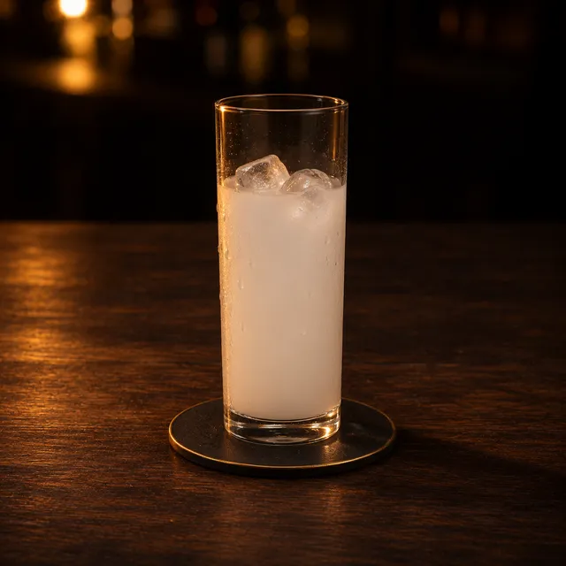
Aslan Sütü4 clLöwenmilch: Rakı, Wasser, Eis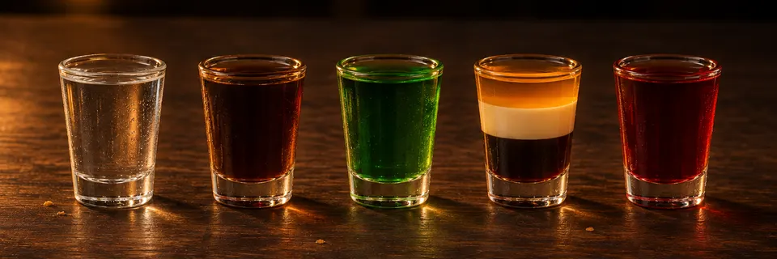
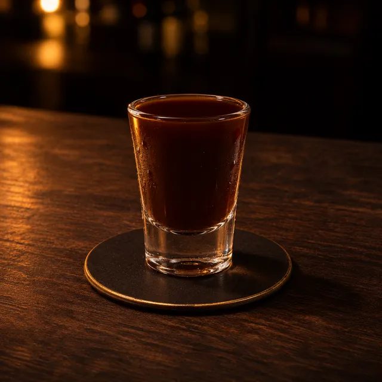
Mokka-Shot14 clKaffeelikör, Wodka, Mokka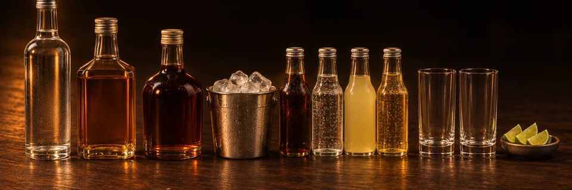
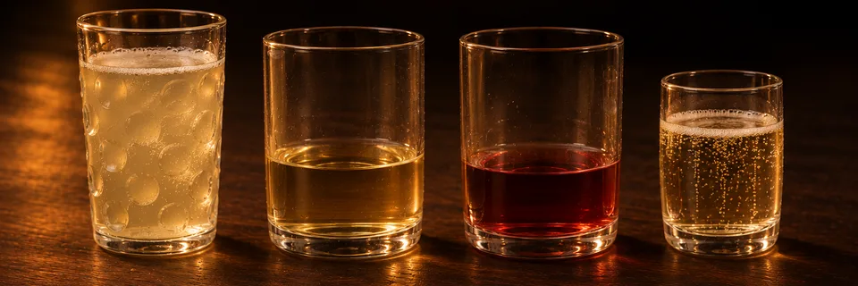
Dazu: Kleines Käsebrett 6,90
Alkoholfreie Cocktails: Virgin Mojito · Lion’s Ginger ↑
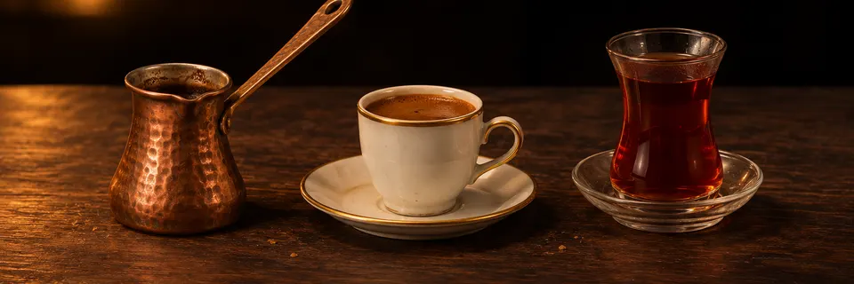
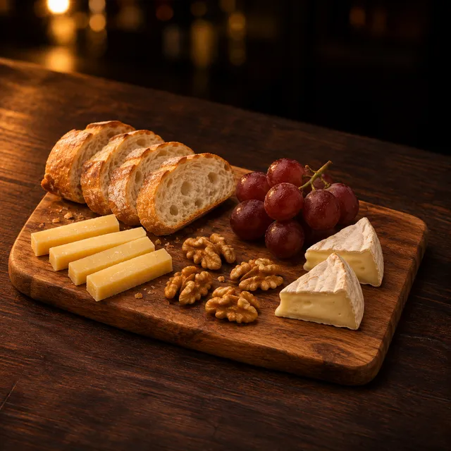
Kleines KäsebrettG,HBergkäse, Camembert, Trauben, Walnüsse6,90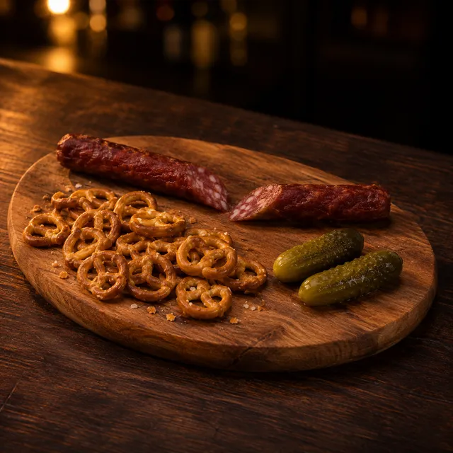
Leo’s Bier VesperA,MLandjäger, Salzbrezeln, Gewürzgurkemit Schweinefleisch4,50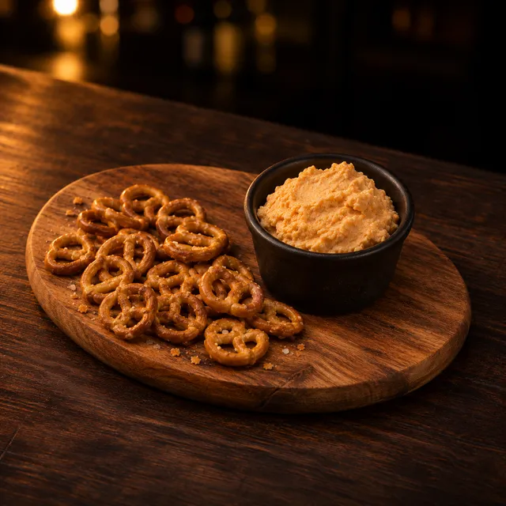
ObazdaA,GBayerische Käsecreme mit Mini-Salzbrezeln und Gewürzgurke4,90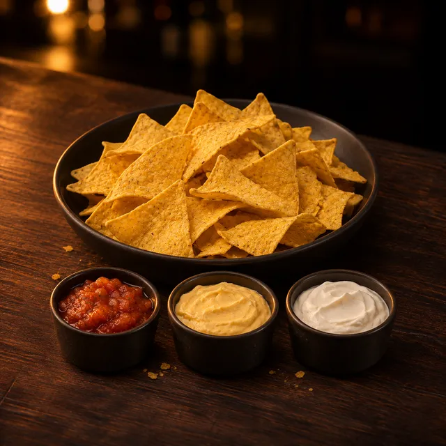
NachosGTortilla-Chips, Salsa, Käsedip und Jalapeños, Dips im separaten Schälchenfür dich 5,90zum Teilen 9,50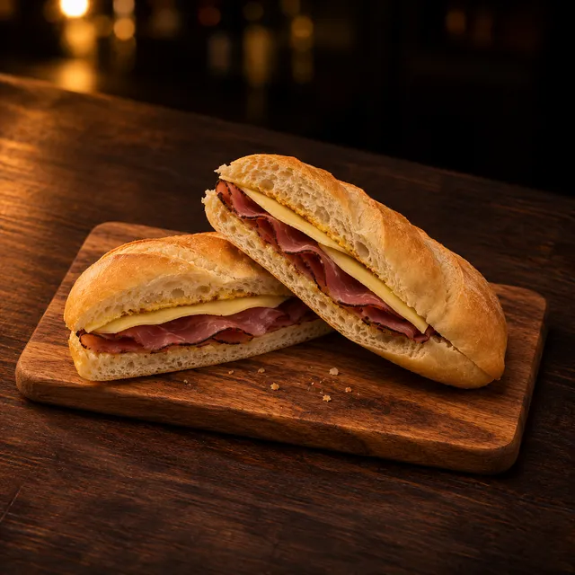
Leo’s Schinken-Käse-BaguetteA,GSchwarzwälder Schinken, Bergkäse · kalt belegtmit Schweinefleisch6,50Alle Preise in Euro inkl. MwSt. Alkohol nur ab 18 Jahren. 1 koffeinhaltig, 2 chininhaltig, 3 mit Farbstoff, 4 mit Phosphat, 5 mit Süßungsmittel. Allergene: A Gluten, D Fisch, G Milch, H Schalenfrüchte, L Sellerie, M Senf, O Sulfite. Weitere Informationen zu Zusatzstoffen und Allergenen bekommst du an der Bar. Abbildungen sind Serviervorschläge.
Prost und Şerefe.
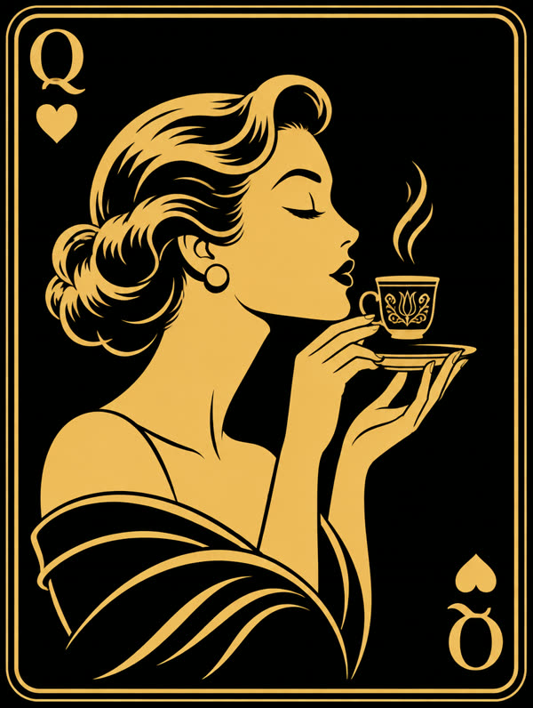
Ab Eröffnung: Mokka bestellen, Tasse umdrehen, wir lesen deinen Kaffeesatz an der Bar.
Zur Unterhaltung.
Ab Eröffnung.
Alles ab Eröffnung. Termine geben wir bekannt, sobald sie feststehen.
Täglich 15 bis 18 Uhr, Feierabend-Preis auf Pils und Weinschorle.
Türkischer Tee im Tulpenglas, dazu Tavla oder Okey: täglich 15 bis 18 Uhr und montags bis mittwochs den ganzen Abend. Zum Spieltisch gibt es die Çay-Runde für vier.
Tavla, Okey, Schach, Skat und Schocken: Die Spiele liegen am Spielregal, frag an der Bar.
Löwenherz
Sag das Löwenwort an der Bar und hol dir einen Kurzen (Kräuter) aufs Haus. Ein Kurzer pro Person und Abend, ab 18 Jahren.
Wenn die Glocke läutet, gibt es die letzte Runde.
Alkohol nur ab 18 Jahren.
Du planst einen besonderen Abend? Schreib uns Datum, Uhrzeit und wie viele ihr seid.
Löwensteiner Str. 7, 74182 Obersulm-Willsbach
Öffnungszeiten folgen zur Eröffnung.
Angaben gemäß § 5 DDG
Leo’s Bar Lounge
Inhaberin: Rüya Tuğtaç
Löwensteiner Str. 7
74182 Obersulm-Willsbach
Telefon: 0173 6512728
E-Mail: leos.heilbronn@gmail.com
Verantwortlich für den Inhalt nach § 18 Abs. 2 MStV: Rüya Tuğtaç, Anschrift wie oben.
Verantwortlich: Rüya Tuğtaç, Löwensteiner Str. 7, 74182 Obersulm-Willsbach, leos.heilbronn@gmail.com
Hosting: Diese Seite wird bei GitHub Pages (GitHub Inc., USA) gehostet. Beim Aufruf verarbeitet der Hoster technisch notwendige Daten wie IP-Adresse, Datum und Uhrzeit (Art. 6 Abs. 1 lit. f DSGVO). Wir selbst speichern keine Besucherdaten.
Keine Cookies, kein Tracking: Wir setzen keine Cookies, keine Analyse-Tools und laden keine Schriften oder Inhalte von Drittanbietern.
Links: Bei Klick auf Instagram, Facebook, Google Maps oder WhatsApp gelten die Datenschutzbestimmungen dieser Anbieter.
Deine Rechte: Auskunft, Berichtigung, Löschung, Einschränkung, Widerspruch und Beschwerde bei einer Aufsichtsbehörde (Art. 15 bis 21 und 77 DSGVO).